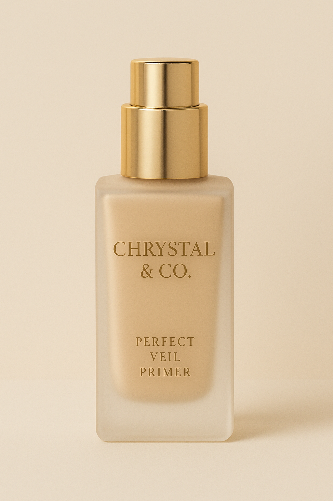

Primer
Bereitet die Haut optimal auf Make-up vor.
Preis: 11.99CHF
Anwendung
- Vorbereitung der Haut:
• Reinige das Gesicht gründlich mit einem Produkt, das auf den eigenen Hauttyp abgestimmt ist.
• Trage die Tagespflege und gegebenenfalls Sonnenschutz auf und lassen diese
• fünf Minuten lang einziehen. Diese Wartezeit ist wichtig, damit sich die Pflege
• nicht mit dem Primer vermischt und das Make-up fleckig wird.
- Auftragen des Primers:
• Verwende eine erbsengroße Menge des Primers, da das Produkt ergiebig ist.
• Trage den Primer mit den Fingerspitzen, einem Schwämmchen oder einem Fundation-Pinsel auf das Gesicht auf.
• Arbeite den Primer ein, indem man ihn sanft in kreisenden Bewegungen in die Haut einklopfen oder sanft einarbeiten kann, anstatt ihn zu verreiben.
• Wende den Primer großflächig an, nicht punktuell, um eine glatte und ebenmäßige Oberfläche für das Make-up zu schaffen.
- Weiteres Vorgehen:
• Lassen den Primer nicht einziehen, sondern lege die dünne Schicht wie eine zweite Haut auf.
• Trage danach direkt Ihre Fundation und das übliche Make-up auf.
• Entferne das Make-up am Ende des Tages besonders gründlich, um Make-up- Rückstände und Talg zu entfernen.